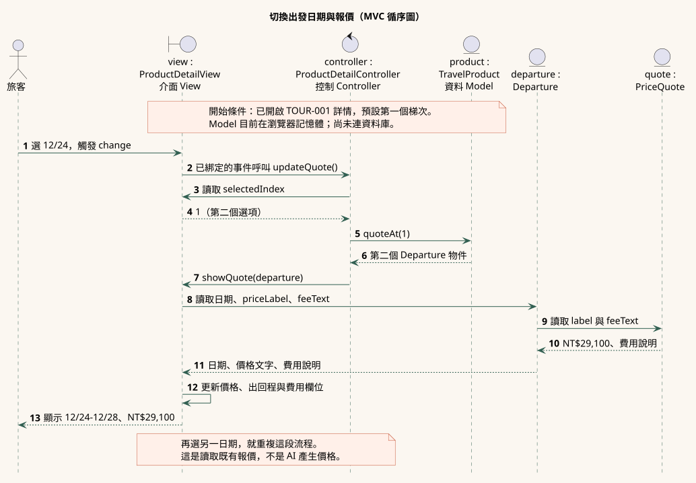

MVC 循序圖
例子：旅客把出發日改成 12/24，畫面更新為該日期的價格。
View｜畫面
ProductDetailView 接收選單操作，顯示日期與報價。
Controller｜控制
ProductDetailController 取得所選索引，請商品找梯次。
Model｜資料
TravelProduct、Departure、PriceQuote 保存商品、日期與價格。

上台可以這樣說
「旅客選日期後，View 把操作交給 Controller；Controller 向 Model 取得該梯次，再讓 View 顯示對應報價。」
打開行程，試著換日期 →範例：第一個日期 12/23 是 NT$27,900，第二個日期 12/24 是 NT$29,100。皆為虛構資料。
對照程式碼
以下節錄自 app.js 的 ProductDetailController。完整 View 與 Controller 在同一檔案；Model 在 models.js。
// show() 在畫面建立後，把選單事件交給控制器。
this.view.onDepartureChange(() => this.updateQuote());
// 控制器取得該日期的梯次，再交給介面顯示。
updateQuote() {
if (!this.product) return;
const departure = this.product.quoteAt(this.view.selectedIndex);
this.view.showQuote(departure);
}可編輯 UML 原稿 · 畫面與控制程式 · 資料模型 · 類別圖 · 整體流程圖
此圖對照目前的前端展示；資料在瀏覽器記憶體，尚未串接資料庫或外部 AI。